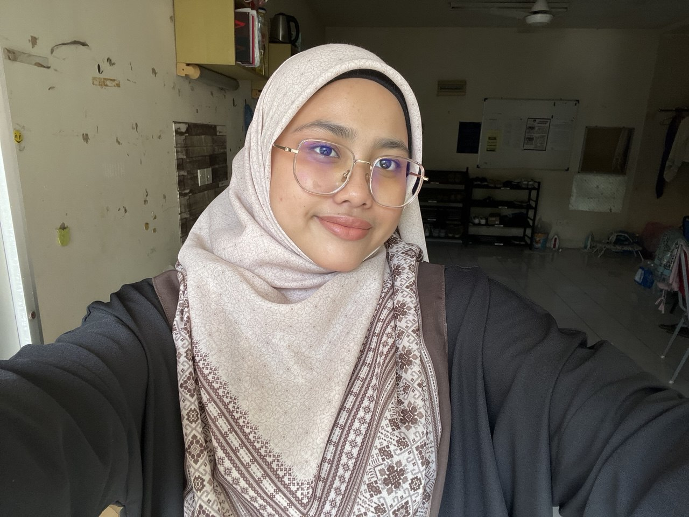

WELCOME TO MY PAGE!
You can call me Athirah and I'm a Full-Time Student
23 years old, I am currently study in CDIM260, Information Management of Library at UiTM Puncak Perdana. I was born in the city garden of light, Kuala Lumpur is the capital city and a federal territory of Malaysia.